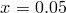
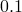
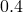
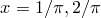
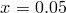
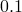
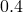
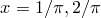

By default, plots have only one  -axis and one
-axis and one  -axis. Further parallel axes can be added and configured via statements such as:
-axis. Further parallel axes can be added and configured via statements such as:
set x3label 'foo' plot sin(x) axes x3y1 set axis x3
In the top statement, a further horizontal axis, called the  -axis, is implicitly created by giving it a label. In the next, the axes modifier is used to tell the plot command to plot data using the horizontal -axis and the vertical -axis. Here again, the axis would be implicitly created if it didn’t already exist. In the third statement, an -axis is explicitly created.
-axis, is implicitly created by giving it a label. In the next, the axes modifier is used to tell the plot command to plot data using the horizontal -axis and the vertical -axis. Here again, the axis would be implicitly created if it didn’t already exist. In the third statement, an -axis is explicitly created.
Unlike Gnuplot, which allows only a maximum of two parallel axes to be attached to any given plot, Pyxplot allows an unlimited number of axes to be used. Odd-numbered -axes appear below the plot, and even numbered -axes above it; a similar rule applies for -axes, to the left and to the right. This is illustrated in Figure 4.3.
-axes appear below the plot, and even numbered -axes above it; a similar rule applies for -axes, to the left and to the right.
As discussed in the previous chapter, the ranges of axes can be set either using the set xrange command, or within the plot command. The following two statements would set equivalent ranges for the -axis:
set x3range [-2:2] plot [:][:][:][:][-2:2] sin(x) axes x3y1
As usual, the first two ranges specified in the plot command apply to the - and -axes. The next pair apply to the  - and
- and  -axes, and so forth.
-axes, and so forth.
Having made axes with the above commands, they may subsequently be removed using the unset axis command as follows:
unset axis x3 unset axis x3x5y3 y7
The top statement, for example, would remove axis . The command unset axis on its own, with no axes specified, returns all axes to their default configuration. The special case of unset axis x1 does not remove the first -axis – it cannot be removed – but instead returns it to its default configuration.
It should be noted that if the following two commands are typed in succession, the second may not entirely negate the first:
set x3label 'foo' unset x3label 'foo'
If an -axis did not previously exist, then the first will have implicitly created one. This would need to be removed with the unset axis x3 command if it was not desired.
A subtly different task is that of removing labels from axes, or setting axes not to display. To achieve this, a number of special axis labels are used. Labelling an axis nolabels has the effect that no title or numerical labels are placed upon it. Labelling it nolabelstics is stronger still; this removes all tick marks from it as well (similar in effect to the set noxtics command; see below). Finally, labelling it invisible makes an axis completely invisible.
Labels may be placed on such axes, by suffixing the magic keywords above with a colon and the desired title. For example:
set xlabel 'nolabels:Time'
would produce an -axis with no numeric labels, but a label of ‘Time’.
In the unlikely event of wanting to label a normal axis with one of these magic words, this may be achieved by prefixing the magic word with a space. There is one further magic axis label, linkaxis, which will be described in Section 5.3.3.
The ticks of axes can be configured to point either inward, towards the plot, as is the default, or outward towards the axis labels, or in both directions. This is achieved using the set xticdir command, for example:
set xticdir inward set y2ticdir outward set x2ticdir both
The position of ticks along each axis can be configured with the set xtics command. The appearance of ticks along any axis can be turned off with the set noxtics command. The syntax for these is given below:
set xtics { axis | border | inward | outward | both }
{ autofreq
| <increment>
| <minimum>, <increment> { , <maximum> }
| ( {"label"} <position>
{ , {"label"} <position> } .... )
}
set noxtics
show xtics
The keywords inward, outward and both alter the directions of the ticks, and have the same effect as in the set xticdir command. The keyword axis is an alias for inward, and border an alias for outward; both are provided for compatibility with Gnuplot. If the keyword autofreq is given, the automatic placement of ticks along the axis is restored.
If <minimum>, <increment>, <maximum> are specified, then ticks are placed at evenly spaced intervals between the specified limits. In the case of logarithmic axes, <increment> is applied multiplicatively.
Alternatively, the final form allows ticks to be placed on an axis individually, and each given its own textual label.
The following example sets the  -axis to have tick marks at , , and . The -axis has symbolically labelled tics at , etc., pointing outwards from the plot. The left-hand -axis has tick marks placed automatically whereas the -axis has no tics at all. The overall effect is shown in Figure 4.4.
-axis to have tick marks at , , and . The -axis has symbolically labelled tics at , etc., pointing outwards from the plot. The left-hand -axis has tick marks placed automatically whereas the -axis has no tics at all. The overall effect is shown in Figure 4.4.
set log x1x2
set grid x2
set xtics 0.05, 2, 0.4
set x2tics border \
("$\frac{1}{\pi}$" 1/pi, "$\frac{1}{2\pi}$" 1/(2*pi), \
"$\frac{1}{3\pi}$" 1/(3*pi), "$\frac{1}{4\pi}$" 1/(4*pi), \
"$\frac{1}{5\pi}$" 1/(5*pi), "$\frac{1}{6\pi}$" 1/(6*pi))
set ytics autofreq
set noy2tics
Minor tick marks can be placed on axes with the set mxtics command, which has the same syntax as above.